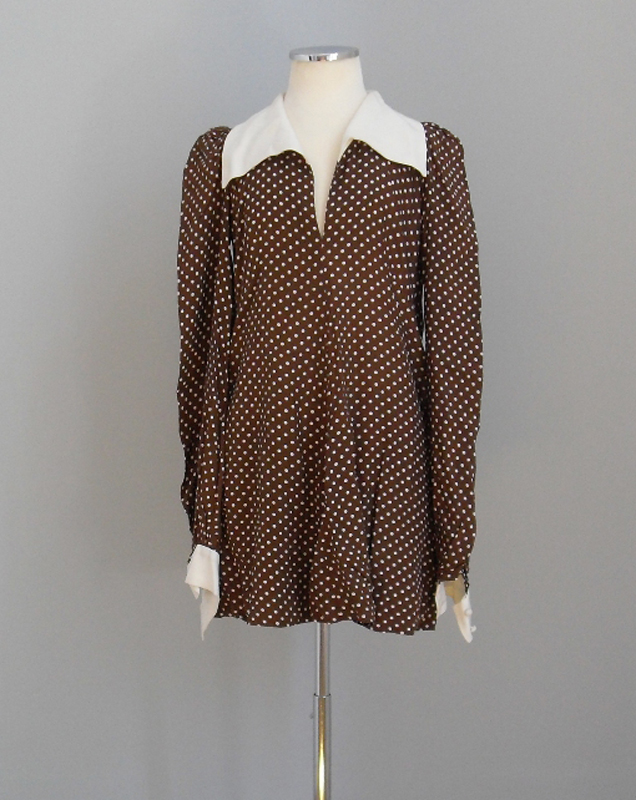
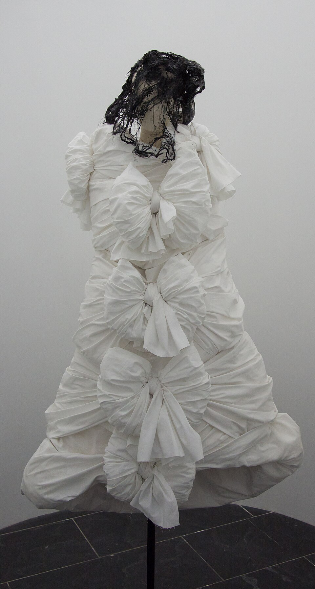
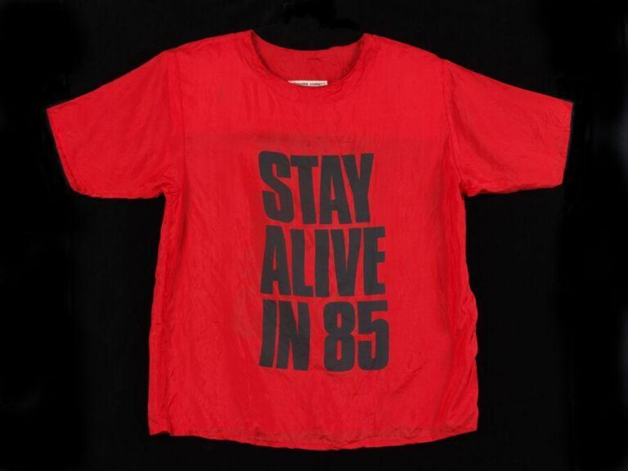
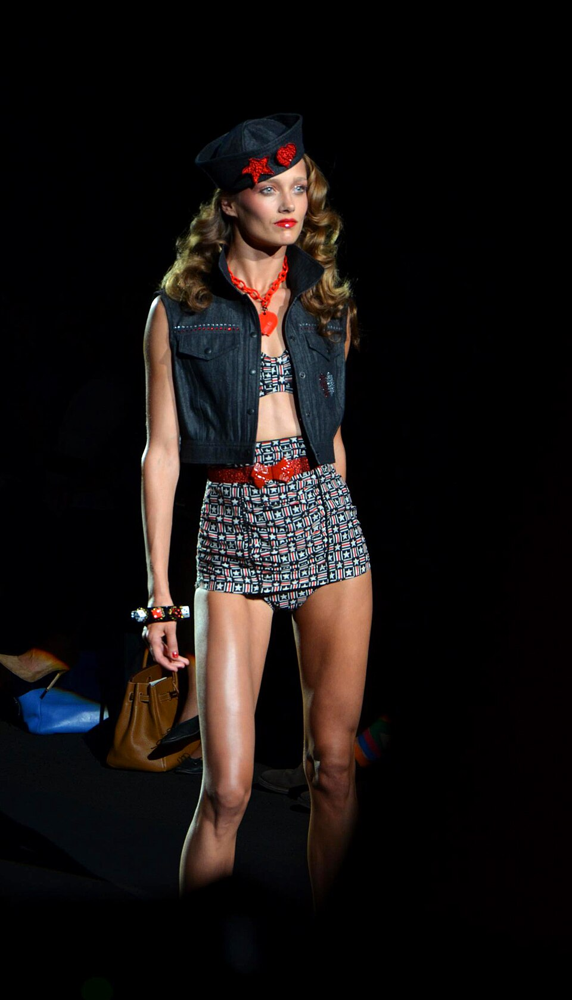
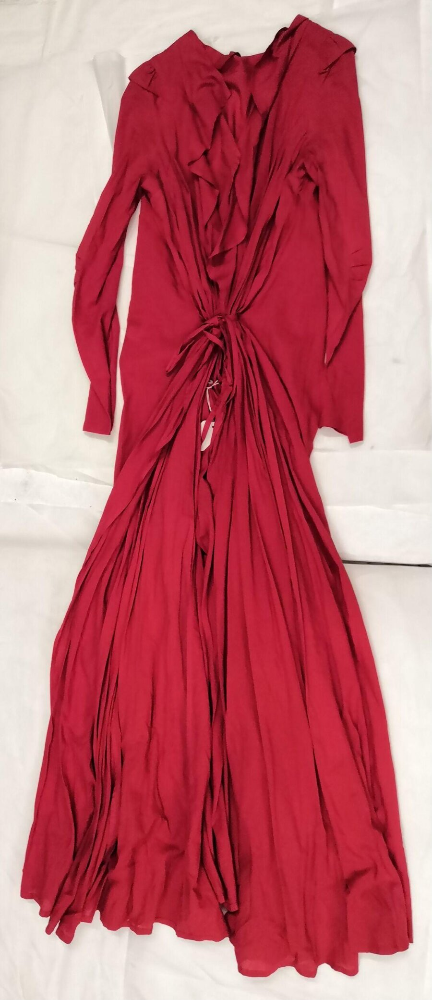
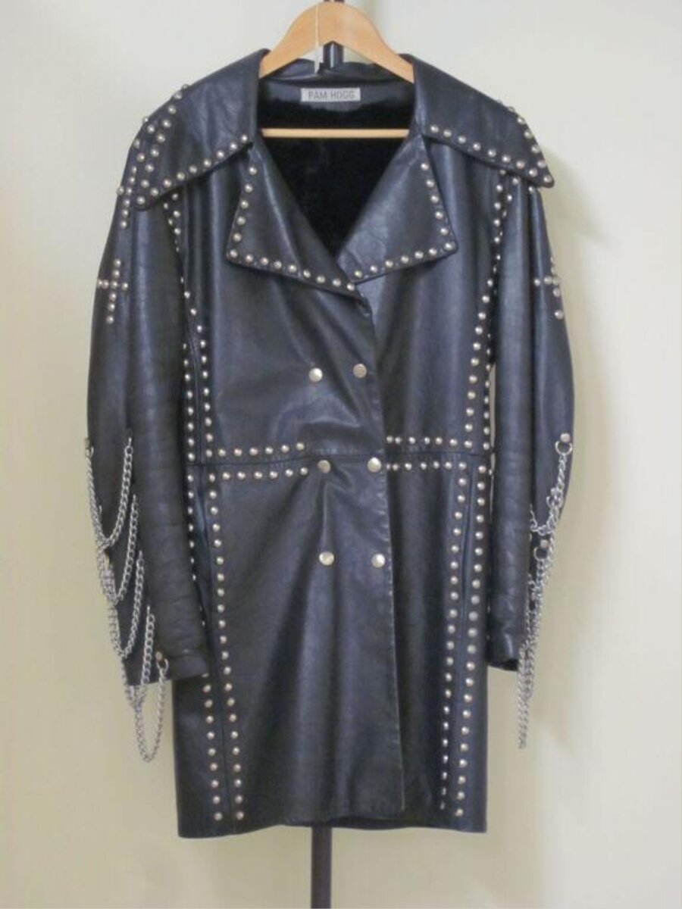
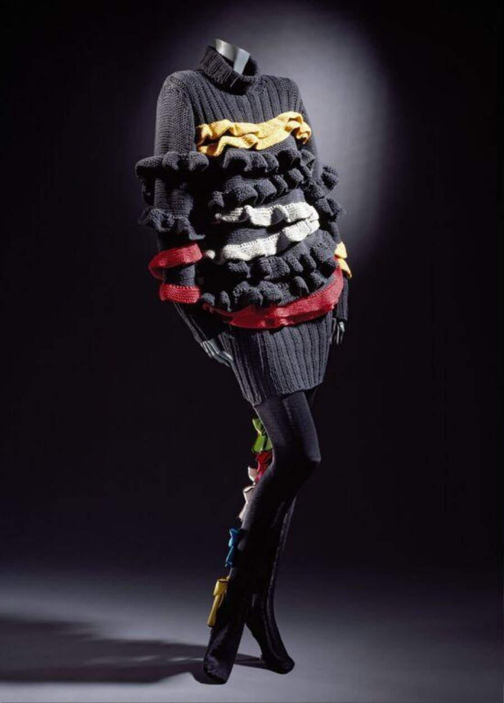
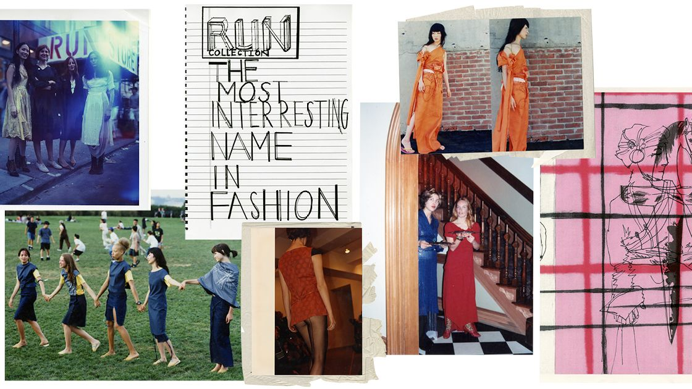
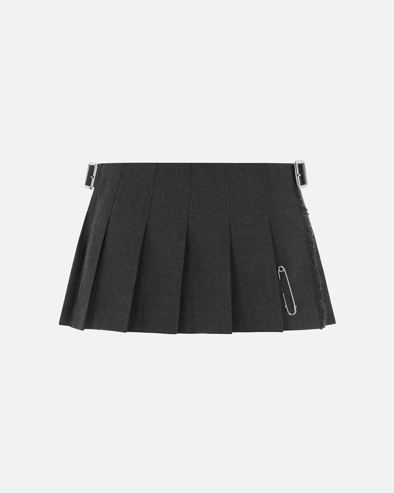
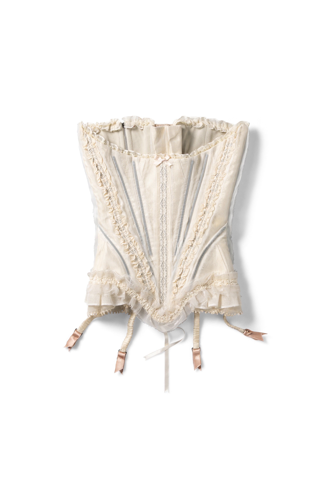

A shop archive
cool dairy archive
A small independent file attached to Huiru Huang’s vintage rock, punk and new-wave shop. The women on the records, and the houses that dressed them — or that they dressed themselves against.
Sunday 16 August 2026 · Taipei
We list a designer and a season only when a source names them. A nightgown from TK Maxx stays a nightgown from TK Maxx. A catsuit in the V&A stays unsigned if the object record is unsigned. Icons and brands only. No shop floor. No pulse.
Icons
All 12 →Icon
Blondie
Debbie Harry · Sprouse before the label
Icon
Faye Wong
Westwood · Yohji · LV SS01
Icon
Fiona Apple
1997 VMA crochet — not Prada
Icon
Gwen Stefani
Homemade ska, then Westwood
Icon
Karen O
Christian Joy only · no runway
Icon
Kim Gordon
Sonic Youth · X-Girl 1993
Icon
Olivia Rodrigo
Archival 80s/90s — not Lolla SS06
Icon
Patti Smith
Horses refusal · Ann Demeulemeester
Icon
PJ Harvey
Dorset · Dry through I Inside
Icon
Poly Styrene
X-Ray Spex · punk 1976–78
Icon
Chrissie Hynde
Pretenders · punk to new wave, 1979
Icon
Fallen Angels 墮落天使 (1995)
Era · William Chang costumes
Brands
All 16 →
Brand
Biba
Barbara Hulanicki · 1964–76

Brand
Comme des Garçons
Rei Kawakubo · Paris 1981

Brand
Vivienne Westwood
King’s Road 1971 · SEX · Seditionaries · World’s End

Brand
Katharine Hamnett
CHOOSE LIFE, 1983

Brand
Anna Sui
Women-run since 1981 · SS93 grunge

Brand
Betsey Johnson
Youthquake that never grew up

Brand
Ann Demeulemeester
Antwerp Six · Patti’s house

Brand
Pam Hogg
Catsuits · d. 26 Nov 2025

Brand
BodyMap
Stewart + Holah · 80s London club
Brand
X-Girl
Kim Gordon + Daisy von Furth, 1993

Brand
Susan Cianciolo / RUN
X-Girl staff · 1995–2001

Brand
Hysteric Glamour
Tokyo 1984 · not women-founded

Brand
Le Kilt
Samantha McCoach · Black Watch

Brand
Dilara Findikoglu
CSM guerrilla, 2015 · not vintage yet

Brand
Chopova Lowena
Carabiner skirt · women-run
Brand
Mimi Wade
Old Hollywood, critiqued · CSM 2015